CODING AGENTS AS PIXEL WORLD MODELS
traex/DeepSeek-V4.1-Flash · common50_0035
点击播放 · 原生 RGB 像素
此结果可播放，但该运行尚未通过最终提交审核。页面展示不代表评测通过。
逐轮保存的候选
回放视频、检查图与代码变化。
每份候选均可单独播放。实际图片检查记录在下方工具轨迹中。
候选 01播放与检查图
点击播放 · 原生 RGB 像素

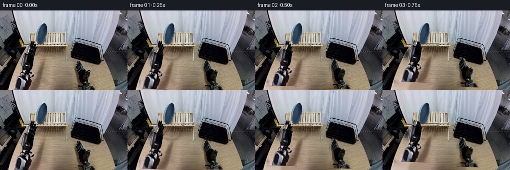
展开代码变化
--- 上一保存版本
+++ 本次保存版本
@@ -0,0 +1,206 @@
+from pathlib import Path
+
+import cv2
+import numpy as np
+from PIL import Image, ImageDraw
+
+import artifact_io
+
+
+ROOT = Path(__file__).resolve().parent
+WIDTH, HEIGHT, FRAMES, FPS = 256, 160, 20, 4
+
+
+def smoothstep(value):
+ value = np.clip(value, 0.0, 1.0)
+ return value * value * (3.0 - 2.0 * value)
+
+
+def interpolate_keys(frame, keys):
+ if frame <= keys[0][0]:
+ return np.asarray(keys[0][1], dtype=np.float32)
+ for (f0, v0), (f1, v1) in zip(keys, keys[1:]):
+ if frame <= f1:
+ amount = smoothstep((frame - f0) / max(1, f1 - f0))
+ return np.asarray(v0, dtype=np.float32) * (1 - amount) + np.asarray(v1, dtype=np.float32) * amount
+ return np.asarray(keys[-1][1], dtype=np.float32)
+
+
+def make_masks(source):
+ plate = np.zeros((HEIGHT, WIDTH), np.uint8)
+ plate_points = np.array(
+ [(88, 20), (98, 23), (106, 33), (110, 49), (111, 63), (107, 78),
+ (100, 91), (88, 97), (74, 93), (64, 82), (60, 67), (61, 49),
+ (66, 34), (74, 24)],
+ np.int32,
+ )
+ cv2.fillPoly(plate, [plate_points], 255)
+
+ left = np.zeros((HEIGHT, WIDTH), np.uint8)
+ left_points = np.array(
+ [(57, 77), (63, 79), (68, 92), (72, 90), (76, 98), (86, 101),
+ (91, 109), (98, 114), (101, 128), (96, 135), (88, 137),
+ (87, 151), (88, 159), (24, 159), (25, 144), (29, 132),
+ (38, 122), (42, 110), (44, 96), (49, 85), (52, 79)],
+ np.int32,
+ )
+ cv2.fillPoly(left, [left_points], 255)
+
+ right = np.zeros((HEIGHT, WIDTH), np.uint8)
+ right_points = np.array(
+ [(155, 100), (164, 103), (169, 115), (174, 114), (178, 123),
+ (188, 126), (196, 133), (201, 143), (201, 159), (148, 159),
+ (151, 145), (155, 132), (152, 119), (153, 108)],
+ np.int32,
+ )
+ cv2.fillPoly(right, [right_points], 255)
+
+ # Refine the hand silhouettes against the warm table while retaining the
+ # dark fingers and the gray metal palm.
+ hsv = cv2.cvtColor(source, cv2.COLOR_RGB2HSV)
+ dark_or_metal = ((hsv[:, :, 2] < 145) | (hsv[:, :, 1] < 45)).astype(np.uint8) * 255
+ left = cv2.bitwise_and(left, cv2.dilate(dark_or_metal, np.ones((3, 3), np.uint8)))
+ right = cv2.bitwise_and(right, cv2.dilate(dark_or_metal, np.ones((3, 3), np.uint8)))
+ left = cv2.morphologyEx(left, cv2.MORPH_CLOSE, np.ones((5, 5), np.uint8))
+ right = cv2.morphologyEx(right, cv2.MORPH_CLOSE, np.ones((5, 5), np.uint8))
+ return plate, left, right
+
+
+def cutout(source, mask, feather=1):
+ alpha = cv2.GaussianBlur(mask, (0, 0), feather).astype(np.float32) / 255.0
+ return source.astype(np.float32), alpha
+
+
+def transform_layer(layer, alpha, center, destination, angle=0.0, scale=(1.0, 1.0)):
+ sx, sy = scale
+ radians = np.deg2rad(angle)
+ cosine, sine = np.cos(radians), np.sin(radians)
+ matrix = np.array(
+ [[sx * cosine, sx * sine, 0.0], [-sy * sine, sy * cosine, 0.0]],
+ np.float32,
+ )
+ offset = np.asarray(destination, np.float32) - matrix[:, :2] @ np.asarray(center, np.float32)
+ matrix[:, 2] = offset
+ warped = cv2.warpAffine(layer, matrix, (WIDTH, HEIGHT), flags=cv2.INTER_LINEAR, borderMode=cv2.BORDER_CONSTANT)
+ warped_alpha = cv2.warpAffine(alpha, matrix, (WIDTH, HEIGHT), flags=cv2.INTER_LINEAR, borderMode=cv2.BORDER_CONSTANT)
+ return warped, np.clip(warped_alpha, 0, 1)
+
+
+def composite(canvas, layer, alpha):
+ return canvas * (1.0 - alpha[:, :, None]) + layer * alpha[:, :, None]
+
+
+def soft_shadow(canvas, alpha, offset, opacity=0.16):
+ shifted = np.float32(offset)
+ matrix = np.array([[1, 0, shifted[0]], [0, 1, shifted[1]]], np.float32)
+ shadow = cv2.warpAffine(alpha, matrix, (WIDTH, HEIGHT))
+ shadow = cv2.GaussianBlur(shadow, (0, 0), 2.0) * opacity
+ return canvas * (1.0 - shadow[:, :, None])
+
+
+def draw_grip_details(canvas, frame):
+ # A small warm reflection travels over the plate rim as it turns.
+ if frame >= 10:
+ amount = smoothstep((frame - 10) / 7)
+ x = int(125 + 48 * amount)
+ y = int(45 + 23 * amount)
+ overlay = canvas.copy()
+ cv2.ellipse(overlay, (x, y), (13, 2), 12, 0, 360, (147, 174, 194), -1)
+ canvas[:] = canvas * 0.92 + overlay * 0.08
+ return canvas
+
+
+def main():
+ source = np.array(Image.open(ROOT / "first_frame.png").convert("RGB"), dtype=np.uint8)
+ plate_mask, left_mask, right_mask = make_masks(source)
+
+ repair_mask = cv2.bitwise_or(plate_mask, cv2.bitwise_or(left_mask, right_mask))
+ repair_mask = cv2.dilate(repair_mask, np.ones((5, 5), np.uint8), iterations=1)
+ background = cv2.inpaint(cv2.cvtColor(source, cv2.COLOR_RGB2BGR), repair_mask, 7, cv2.INPAINT_TELEA)
+ background = cv2.cvtColor(background, cv2.COLOR_BGR2RGB)
+
+ # Remove the slight blue bleed left by inpainting around the plate.
+ plate_halo = cv2.dilate(plate_mask, np.ones((9, 9), np.uint8))
+ plate_halo = cv2.subtract(plate_halo, cv2.dilate(plate_mask, np.ones((3, 3), np.uint8)))
+ hsv = cv2.cvtColor(background, cv2.COLOR_RGB2HSV)
+ halo_pixels = (plate_halo > 0) & (hsv[:, :, 0] > 88) & (hsv[:, :, 0] < 125) & (hsv[:, :, 1] > 35)
+ if np.any(halo_pixels):
+ fill = cv2.GaussianBlur(background, (0, 0), 2.5)
+ background[halo_pixels] = fill[halo_pixels]
+
+ plate_layer, plate_alpha = cutout(source, plate_mask, 0.75)
+ left_layer, left_alpha = cutout(source, left_mask, 0.7)
+ right_layer, right_alpha = cutout(source, right_mask, 0.7)
+
+ plate_keys = [
+ (0, (88, 58, 0, 1.00, 1.00)),
+ (5, (88, 57, 0, 1.00, 1.00)),
+ (8, (94, 47, -3, 1.00, 1.00)),
+ (11, (111, 39, -7, 1.00, 1.00)),
+ (14, (142, 47, 13, 1.00, 1.00)),
+ (17, (171, 68, 54, 1.00, 0.82)),
+ (19, (181, 83, 82, 1.00, 0.56)),
+ ]
+ left_keys = [
+ (0, (65, 120)),
+ (5, (79, 94)),
+ (8, (96, 82)),
+ (11, (111, 82)),
+ (15, (76, 111)),
+ (19, (57, 127)),
+ ]
+ right_keys = [
+ (0, (177, 131)),
+ (7, (179, 116)),
+ (12, (193, 105)),
+ (16, (199, 91)),
+ (19, (199, 89)),
+ ]
+
+ frames = []
+ for frame in range(FRAMES):
+ if frame == 0:
+ frames.append(source.copy())
+ continue
+
+ plate_values = interpolate_keys(frame, plate_keys)
+ plate_center = (float(plate_values[0]), float(plate_values[1]))
+ plate_angle = float(plate_values[2])
+ plate_scale = (float(plate_values[3]), float(plate_values[4]))
+ left_center = tuple(interpolate_keys(frame, left_keys))
+ right_center = tuple(interpolate_keys(frame, right_keys))
+
+ canvas = background.astype(np.float32)
+ plate, plate_a = transform_layer(
+ plate_layer, plate_alpha, (88, 58), plate_center, plate_angle, plate_scale
+ )
+ canvas = soft_shadow(canvas, plate_a, (3 + frame * 0.15, 5 + frame * 0.1), 0.18)
+ canvas = composite(canvas, plate, plate_a)
+
+ left, left_a = transform_layer(left_layer, left_alpha, (64, 119), left_center, -2 + frame * 0.25)
+ right, right_a = transform_layer(right_layer, right_alpha, (177, 131), right_center, -frame * 0.35)
+
+ # During the handoff, the right gripper comes in front of the plate.
+ if frame < 9:
+ canvas = composite(canvas, left, left_a)
+ canvas = composite(canvas, right, right_a)
+ else:
+ canvas = composite(canvas, right, right_a)
+ canvas = composite(canvas, left, left_a)
+
+ canvas = draw_grip_details(canvas, frame)
+ frames.append(np.clip(canvas, 0, 255).astype(np.uint8))
+
+ artifact_io.save(np.asarray(frames), ROOT)
+
+ # Keep the extracted elements available for quick visual inspection.
+ Image.fromarray(background).save(ROOT / ".tmp" / "clean_background.png")
+ overlay = source.copy()
+ overlay[plate_mask > 0] = (overlay[plate_mask > 0] * 0.35 + np.array([255, 70, 40]) * 0.65).astype(np.uint8)
+ overlay[left_mask > 0] = (overlay[left_mask > 0] * 0.35 + np.array([40, 255, 90]) * 0.65).astype(np.uint8)
+ overlay[right_mask > 0] = (overlay[right_mask > 0] * 0.35 + np.array([255, 210, 40]) * 0.65).astype(np.uint8)
+ Image.fromarray(overlay).save(ROOT / ".tmp" / "mask_check.png")
+
+
+if __name__ == "__main__":
+ main()
可观测工具轨迹
实际执行的命令与返回图片。
命令 1exit 0
/bin/bash -c "pwd && rg --files -g 'prompt.txt' -g 'GENERATION_RULES.md' -g 'first_frame.png' -g '"'!**/.git/**'"'"
命令 2exit 0
/bin/bash -c 'ls -la'
命令 3exit 0
/bin/bash -c 'cat prompt.txt'
命令 4exit 0
/bin/bash -c 'cat GENERATION_RULES.md'
命令 5exit 0
/bin/bash -c 'cat task_spec.json'
命令 6exit 0
/bin/bash -c "sed -n '1,240p' artifact_io.py"
命令 7exit 0
/bin/bash -c "python - <<'PY'
from PIL import Image
import numpy as np
im=np.array(Image.open('first_frame.png').convert('RGB'))
print(im.shape)
# list common colors in region around plate
r=im[15:90,65:115]
from collections import Counter
for c,n in Counter(map(tuple,r.reshape(-1,3))).most_common(20): print(c,n)
PY"命令 8exit 0
/bin/bash -c "python - <<'PY'
try:
import cv2; print('cv2',cv2.__version__)
except Exception as e: print('no cv2',e)
try:
import scipy; print('scipy',scipy.__version__)
except Exception as e: print('no scipy',e)
PY"命令 9exit 0
/bin/bash -c "python - <<'PY'
from PIL import Image
im=Image.open('first_frame.png')
for name,box in [('left',(20,80,100,160)),('right',(140,90,220,160)),('plate',(55,15,115,90)),('rack',(135,55,225,115))]:
im.crop(box).resize(((box[2]-box[0])*4,(box[3]-box[1])*4)).save('.tmp/'+name+'.png')
PY"命令 10exit 0
/bin/bash -c "python - <<'PY'
from PIL import Image
import numpy as np
im=np.array(Image.open('first_frame.png').convert('RGB'))
pts=[(90,50),(90,30),(75,60),(100,70),(80,40),(110,50),(75,45),(60,60),(40,120),(170,120)]
for x,y in pts: print((x,y),im[y,x])
# hsv stats plate box
import cv2
hsv=cv2.cvtColor(im,cv2.COLOR_RGB2HSV)
for x,y in pts: print('hsv',(x,y),hsv[y,x])
PY"命令 11exit 0
/bin/bash -c "python - <<'PY'
from PIL import Image, ImageDraw, ImageFont
im=Image.open('first_frame.png').convert('RGB').resize((1024,640),Image.Resampling.NEAREST)
d=ImageDraw.Draw(im)
for x in range(0,257,20):
d.line((x*4,0,x*4,640),fill=(255,0,0),width=1)
d.text((x*4+2,2),str(x),fill=(255,0,0))
for y in range(0,161,20):
d.line((0,y*4,1024,y*4),fill=(0,255,0),width=1)
d.text((2,y*4+2),str(y),fill=(0,255,0))
im.save('.tmp/grid.png')
PY"命令 12exit 0
/bin/bash -c 'python generate.py'
命令 13exit 0
/bin/bash -c "python - <<'PY'
from PIL import Image
import numpy as np, cv2
im=np.array(Image.open('first_frame.png').convert('RGB'))
hsv=cv2.cvtColor(im,cv2.COLOR_RGB2HSV)
for xy in [(60,80),(65,85),(70,95),(75,100),(80,105),(85,110),(90,120),(70,120),(50,120),(40,130),(30,150),(70,150),(90,150),(155,110),(165,115),(175,120),(185,130),(195,145),(160,105)]:
x,y=xy; print(xy,im[y,x],hsv[y,x])
PY"命令 14exit 0
/bin/bash -c "python - <<'PY'
from PIL import Image
for f in [0,2,4,6,8,10,12,14,16,18,19]:
im=Image.open(f'frames/{f:02d}.png')
im.crop((40,20,225,160)).resize((740,560),Image.Resampling.NEAREST).save(f'.tmp/crop{f:02d}.png')
PY"命令 15exit 0
/bin/bash -c "python - <<'PY'
import cv2, numpy as np
from PIL import Image
src=np.array(Image.open('first_frame.png').convert('RGB'))
# sample left mask from previous run visual? use same function
import generate
p,l,r=generate.make_masks(src)
for name,m in [('l',l),('r',r),('p',p)]:
ys,xs=np.where(m>0)
print(name, xs.min(),xs.max(),ys.min(),ys.max(),len(xs))
print('bbox', (xs.min(),ys.min(),xs.max()+1,ys.max()+1))
PY"命令 16exit 0
/bin/bash -c "python - <<'PY'
from PIL import Image
import numpy as np
ims=[Image.open(f'frames/{i:02d}.png').convert('RGB') for i in range(20)]
# diff between each pair and 00
for i,im in enumerate(ims):
a=np.array(im); b=np.array(ims[0]); print(i, np.abs(a.astype(int)-b).mean().round(2), np.count_nonzero(np.any(a"'!=b,axis=2)))
PY'命令 17exit 0
/bin/bash -c "python - <<'PY'
from PIL import Image
im=Image.open('first_frame.png')
# crop source plate tightly and upscale
im.crop((55,15,115,100)).resize((480,680),Image.Resampling.NEAREST).save('.tmp/source_plate.png')
PY"命令 18exit 0
/bin/bash -c "python - <<'PY'
import cv2,numpy as np
from PIL import Image
im=np.array(Image.open('first_frame.png').convert('RGB'))
hsv=cv2.cvtColor(im,cv2.COLOR_RGB2HSV)
r,g,b=[im[:,:,i].astype(np.int16) for i in range(3)]
roi=np.zeros((160,256),np.uint8); cv2.ellipse(roi,(87,58),(30,42),-5,0,360,255,-1)
cond=((hsv[:,:,0]>=92)&(hsv[:,:,0]<=122)&(hsv[:,:,1]>=28)&(roi>0)) | ((b-r>16)&(b>35)&(roi>0))
m=(cond.astype(np.uint8)*255)
m=cv2.morphologyEx(m,cv2.MORPH_CLOSE,np.ones((5,5),np.uint8))
n,lab,stats,cents=cv2.connectedComponentsWithStats(m)
# largest comps excluding bg
for i in np.argsort(stats[1:,cv2.CC_STAT_AREA])[::-1][:8]+1: print(i,stats[i].tolist())
idx=1+np.argmax(stats[1:,cv2.CC_STAT_AREA]); m=(lab==idx).astype(np.uint8)*255
# contour fill hull-ish close
contours,_=cv2.findContours(m,cv2.RETR_EXTERNAL,cv2.CHAIN_APPROX_SIMPLE); out=np.zeros_like(m); cv2.drawContours(out,contours,-1,255,-1)
out=cv2.morphologyEx(out,cv2.MORPH_CLOSE,np.ones((3,3),np.uint8))
ys,xs=np.where(out>0); print('bbox',xs.min(),xs.max(),ys.min(),ys.max(),len(xs))
ov=im.copy(); ov[out>0]=(ov[out>0]*.3+np.array([255,50,30])*.7).astype(np.uint8)
Image.fromarray(ov).save('.tmp/plate_seg.png')
Image.fromarray(out).save('.tmp/plate_mask.png')
PY"命令 19exit 0
/bin/bash -c "python - <<'PY'
import cv2,numpy as np
from PIL import Image
im=np.array(Image.open('first_frame.png').convert('RGB'))
hsv=cv2.cvtColor(im,cv2.COLOR_RGB2HSV)
y,x=np.mgrid[:160,:256]
roi=(((x-89)/27)**2+((y-57)/42)**2<1).astype(np.uint8)
cond=(hsv[:,:,0]>=92)&(hsv[:,:,0]<=122)&(hsv[:,:,1]>=20)&(roi>0)
cond |= ((im[:,:,2].astype(int)-im[:,:,0].astype(int)>12)&(im[:,:,2]>28)&(roi>0))
m=(cond.astype(np.uint8)*255)
m=cv2.morphologyEx(m,cv2.MORPH_CLOSE,np.ones((5,5),np.uint8))
# fill holes
contours,_=cv2.findContours(m,cv2.RETR_EXTERNAL,cv2.CHAIN_APPROX_SIMPLE)
out=np.zeros_like(m)
for c in contours:
if cv2.contourArea(c)>200: cv2.drawContours(out,[c],-1,255,-1)
# manually append lower light rim region polygon using blue-ish
# blue-ish region direct all within roi
blue=((hsv[:,:,0]>=90)&(hsv[:,:,0]<=125)&(hsv[:,:,1]>=25)&(roi>0)).astype(np.uint8)*255
blue=cv2.morphologyEx(blue,cv2.MORPH_CLOSE,np.ones((9,9),np.uint8))
# keep connected to big blue
n,lab,stats,cents=cv2.connectedComponentsWithStats(blue)
idx=1+np.argmax(stats[1:,4]); blue=(lab==idx).astype(np.uint8)*255
out=cv2.bitwise_or(out,blue)
contours,_=cv2.findContours(out,cv2.RETR_EXTERNAL,cv2.CHAIN_APPROX_SIMPLE)
out[:]=0
for c in contours:
if cv2.contourArea(c)>200: cv2.drawContours(out,[c],-1,255,-1)
ys,xs=np.where(out>0); print('bbox',xs.min(),xs.max(),ys.min(),ys.max(),len(xs))
ov=im.copy();ov[out>0]=(ov[out>0]*.3+np.array([255,50,30])*.7).astype(np.uint8)
Image.fromarray(ov).save('.tmp/plate_seg2.png')
PY"命令 20exit 0
/bin/bash -c "python - <<'PY'
from PIL import Image
im=Image.open('first_frame.png')
im.crop((0,70,110,160)).resize((880,720),Image.Resampling.NEAREST).save('.tmp/left_big.png')
PY"命令 21exit 0
/bin/bash -c "python - <<'PY'
from PIL import Image
im=Image.open('first_frame.png')
im.crop((120,85,230,160)).resize((880,600),Image.Resampling.NEAREST).save('.tmp/right_big.png')
PY"命令 22exit 0
/bin/bash -c "python - <<'PY'
from PIL import Image
import numpy as np
im=np.array(Image.open('first_frame.png').convert('RGB'))
for y in range(80,160,10):
row=[]
for x in range(10,110,10):
row.append('%02x%02x%02x'%tuple(im[y,x]))
print(y,' '.join(row))
PY"命令 23exit 0
/bin/bash -c "python - <<'PY'
from PIL import Image
import numpy as np
im=np.array(Image.open('first_frame.png').convert('RGB'))
# Print per x min/max dark pixel in lower half
for x in range(20,105,5):
vals=[]
for y in range(75,160):
r,g,b=map(int,im[y,x]);
if max(r,g,b)<100 or (max(r,g,b)<150 and max(r,g,b)-min(r,g,b)<18): vals.append(y)
print(x, (min(vals),max(vals),len(vals)) if vals else None)
PY"命令 24exit 0
/bin/bash -c "python - <<'PY'
import cv2,numpy as np
from PIL import Image
im=np.array(Image.open('first_frame.png').convert('RGB'))
hsv=cv2.cvtColor(im,cv2.COLOR_RGB2HSV)
y,x=np.mgrid[:160,:256]
roi=((x>=18)&(x<=103)&(y>=74)).astype(np.uint8)
gray=((hsv[:,:,2]<145)|(hsv[:,:,1]<38)).astype(np.uint8)
m=roi*gray*255
m=cv2.morphologyEx(m,cv2.MORPH_CLOSE,np.ones((3,3),np.uint8))
# connected comps of mask that touch bottom or overlap hand area
n,lab,stats,cents=cv2.connectedComponentsWithStats(m)
ov=im.copy()
colors=[(255,0,0),(0,255,0),(0,0,255),(255,255,0),(255,0,255),(0,255,255)]
for j,i in enumerate(np.argsort(stats[1:,4])[::-1][:6]+1):
print(j,stats[i].tolist())
ov[lab==i]=(ov[lab==i]*.5+np.array(colors[j%len(colors)])*.5).astype(np.uint8)
Image.fromarray(ov).save('.tmp/left_components.png')
PY"命令 25exit 0
/bin/bash -c "python - <<'PY'
import cv2,numpy as np
from PIL import Image
im=np.array(Image.open('first_frame.png').convert('RGB'))
hsv=cv2.cvtColor(im,cv2.COLOR_RGB2HSV)
y,x=np.mgrid[:160,:256]
roi=((x>=140)&(x<=205)&(y>=95)).astype(np.uint8)
gray=((hsv[:,:,2]<150)|(hsv[:,:,1]<42)).astype(np.uint8)
m=roi*gray*255
m=cv2.morphologyEx(m,cv2.MORPH_CLOSE,np.ones((3,3),np.uint8))
n,lab,stats,cents=cv2.connectedComponentsWithStats(m)
ov=im.copy(); colors=[(255,0,0),(0,255,0),(0,0,255),(255,255,0),(255,0,255),(0,255,255)]
for j,i in enumerate(np.argsort(stats[1:,4])[::-1][:8]+1):
print(j,stats[i].tolist())
ov[lab==i]=(ov[lab==i]*.5+np.array(colors[j%len(colors)])*.5).astype(np.uint8)
Image.fromarray(ov).save('.tmp/right_components.png')
PY"命令 26exit 0
/bin/bash -c "python - <<'PY'
from PIL import Image
im=Image.open('first_frame.png')
im.crop((0,70,60,160)).resize((480,720),Image.Resampling.NEAREST).save('.tmp/left_wrist.png')
PY"命令 27exit 0
/bin/bash -c "python - <<'PY'
from PIL import Image
import numpy as np
im=np.array(Image.open('first_frame.png').convert('RGB'))
# save a crop with source coordinates drawn around left and right object at 8x
from PIL import ImageDraw
for name,box in [('left',(0,70,110,160)),('right',(135,90,210,160))]:
cr=Image.fromarray(im[box[1]:box[3],box[0]:box[2]])
cr=cr.resize((cr.width*6,cr.height*6),Image.Resampling.NEAREST)
d=ImageDraw.Draw(cr)
for x in range(box[0],box[2]+1,10):
xx=(x-box[0])*6; d.line((xx,0,xx,cr.height),fill=(255,0,0)); d.text((xx+2,2),str(x),fill=(255,0,0))
for y in range(box[1],box[3]+1,10):
yy=(y-box[1])*6; d.line((0,yy,cr.width,yy),fill=(0,255,0)); d.text((2,yy+2),str(y),fill=(0,255,0))
cr.save('.tmp/'+name+'_grid.png')
PY"命令 28exit 1
/bin/bash -c "python - <<'PY'
from PIL import Image,ImageDraw
im=np.array(Image.open('first_frame.png').convert('RGB'))
box=(50,10,125,105)
cr=Image.fromarray(im[box[1]:box[3],box[0]:box[2]]).resize(((box[2]-box[0])*8,(box[3]-box[1])*8),Image.Resampling.NEAREST)
d=ImageDraw.Draw(cr)
for x in range(50,126,5):
xx=(x-50)*8; d.line((xx,0,xx,cr.height),fill=(255,0,0)); d.text((xx+1,1),str(x),fill=(255,0,0))
for y in range(10,106,5):
yy=(y-10)*8; d.line((0,yy,cr.width,yy),fill=(0,255,0)); d.text((1,yy+1),str(y),fill=(0,255,0))
cr.save('.tmp/plate_grid.png')
PY"命令 29exit 0
/bin/bash -c "python - <<'PY'
from PIL import Image,ImageDraw
import numpy as np
im=np.array(Image.open('first_frame.png').convert('RGB'))
box=(50,10,125,105)
cr=Image.fromarray(im[box[1]:box[3],box[0]:box[2]]).resize(((box[2]-box[0])*8,(box[3]-box[1])*8),Image.Resampling.NEAREST)
d=ImageDraw.Draw(cr)
for x in range(50,126,5):
xx=(x-50)*8; d.line((xx,0,xx,cr.height),fill=(255,0,0)); d.text((xx+1,1),str(x),fill=(255,0,0))
for y in range(10,106,5):
yy=(y-10)*8; d.line((0,yy,cr.width,yy),fill=(0,255,0)); d.text((1,yy+1),str(y),fill=(0,255,0))
cr.save('.tmp/plate_grid.png')
PY"命令 30exit 0
/bin/bash -c "python - <<'PY'
from PIL import Image
import numpy as np
im=np.array(Image.open('first_frame.png').convert('RGB'))
# Print exact blue mask outline from HSV and components
import cv2
hsv=cv2.cvtColor(im,cv2.COLOR_RGB2HSV)
m=((hsv[:,:,0]>=92)&(hsv[:,:,0]<=125)&(hsv[:,:,1]>=25)&(np.indices((160,256))[0]<100)).astype(np.uint8)*255
n,lab,stats,_=cv2.connectedComponentsWithStats(m)
idx=1+np.argmax(stats[1:,4]); m=(lab==idx).astype(np.uint8)*255
for y in range(16,95,4):
xs=np.where(m[y]>0)[0]
print(y, (xs.min(),xs.max()) if len(xs) else None)
PY"命令 31exit 0
/bin/bash -c "python - <<'PY'
from PIL import Image
import numpy as np
im=np.array(Image.open('first_frame.png').convert('RGB'))
# print mask from earlier current script as ascii every 2px in plate crop
import generate
p,_,_=generate.make_masks(im)
for y in range(16,100,4):
print(f'{y:3}', ''.join('#' if p[y,x]>0 else '.' for x in range(55,116,2)))
PY"命令 32exit 0
/bin/bash -c "python - <<'PY'
from PIL import Image
import numpy as np
im=np.array(Image.open('first_frame.png').convert('RGB'))
for p in [(63,25),(64,30),(65,40),(62,50),(61,60),(62,70),(64,80),(67,88),(70,93),(105,25),(109,35),(111,45),(110,55),(108,65),(106,75),(102,85),(98,92)]:
x,y=p; print(p, im[y,x])
PY"命令 33exit 0
/bin/bash -c "python - <<'PY'
from PIL import Image
import numpy as np
im=np.array(Image.open('first_frame.png').convert('RGB'))
# sample plate center x90 per y
for y in range(16,99,4): print(y, im[y,88].tolist(), im[y,95].tolist(), im[y,80].tolist())
PY"命令 34exit 0
/bin/bash -c "python - <<'PY'
from PIL import Image
import numpy as np, cv2
im=np.array(Image.open('first_frame.png').convert('RGB'))
hsv=cv2.cvtColor(im,cv2.COLOR_RGB2HSV)
# Print hsv x positions at selected y for hue 90-120 sat>20
for y in [25,30,35,40,45,50,55,60,65]:
xs=[]
for x in range(55,116):
h,s,v=hsv[y,x]
if 90<=h<=125 and s>=20: xs.append(x)
print(y,(min(xs),max(xs),len(xs)) if xs else None)
PY"命令 35exit 0
/bin/bash -c "python - <<'PY'
from PIL import Image
import numpy as np, cv2
im=np.array(Image.open('first_frame.png').convert('RGB'))
hsv=cv2.cvtColor(im,cv2.COLOR_RGB2HSV)
# mask blues and print ascii
m=((hsv[:,:,0]>=90)&(hsv[:,:,0]<=125)&(hsv[:,:,1]>=20)).astype(np.uint8)
for y in range(16,100,2): print(f'{y:3}', ''.join('#' if m[y,x] else '.' for x in range(55,116)))
PY"命令 36exit 0
/bin/bash -c "python - <<'PY'
from PIL import Image
import numpy as np
im=np.array(Image.open('first_frame.png').convert('RGB'))
# print grayscale source in crop around plate via characters
for y in range(18,96,3):
s=''
for x in range(58,115,1):
v=im[y,x].mean()
s += ' ' if v>210 else '.' if v>175 else ':' if v>140 else '*' if v>95 else '#' if v>45 else '@'
print(f'{y:3}',s)
PY"命令 37exit 0
/bin/bash -c "python - <<'PY'
from PIL import Image
import numpy as np
im=np.array(Image.open('first_frame.png').convert('RGB'))
# ascii around left hand use blue channel saturation? Print pixels by threshold every 2
for y in range(74,160,4):
s=''
for x in range(15,108,2):
r,g,b=map(int,im[y,x]);
if max(r,g,b)<65: ch='@'
elif max(r,g,b)<115 or max(r,g,b)-min(r,g,b)<12: ch='#'
elif r>g+15 and g>b+5: ch='.'
else: ch=' '
s+=ch
print(f'{y:3}',s)
PY"命令 38exit 0
/bin/bash -c "python - <<'PY'
from PIL import Image
import numpy as np
im=np.array(Image.open('first_frame.png').convert('RGB'))
# identify hand mask with background chroma & dark, then show bbox + save
import cv2
hsv=cv2.cvtColor(im,cv2.COLOR_RGB2HSV)
y,x=np.mgrid[:160,:256]
roi=((x>=18)&(x<=104)&(y>=74)).astype(np.uint8)
fg=((hsv[:,:,2]<155)|(hsv[:,:,1]<42)).astype(np.uint8)
m=roi*fg*255
# use flood-ish all comp then close
m=cv2.morphologyEx(m,cv2.MORPH_CLOSE,np.ones((5,5),np.uint8))
n,lab,stats,_=cv2.connectedComponentsWithStats(m)
idx=1+np.argmax(stats[1:,4]); out=(lab==idx).astype(np.uint8)*255
for y in range(74,160,4): print(f'{y:3}', ''.join('#' if out[y,x]>0 else '.' for x in range(15,108,2)))
Image.fromarray(out).save('.tmp/left_mask.png')
PY"命令 39exit 0
/bin/bash -c "python - <<'PY'
from PIL import Image
import numpy as np
im=np.array(Image.open('first_frame.png').convert('RGB'))
for y in range(74,100,2):
s=''
for x in range(15,108,2):
r,g,b=map(int,im[y,x]); v=max(r,g,b); mn=min(r,g,b)
if v<50: ch='@'
elif v<100: ch='#'
elif mn>165 and v-mn<20: ch='M' # metal/background gray
elif r>g+10: ch='.'
else: ch=' '
s+=ch
print(f'{y:3}',s)
PY"命令 40exit 0
/bin/bash -c "python - <<'PY'
from PIL import Image
import numpy as np
im=np.array(Image.open('first_frame.png').convert('RGB'))
for x in range(20,101,5):
print(x, [im[y,x].tolist() for y in [78,82,86,90,94,98,102]])
PY"命令 41exit 0
/bin/bash -c "python - <<'PY'
from PIL import Image
import numpy as np
im=np.array(Image.open('first_frame.png').convert('RGB'))
for x in range(40,80,2):
print(x, ''.join('@' if max(im[y,x])<60 else '#' if max(im[y,x])<120 else '.' if im[y,x,0]>im[y,x,2]+5 else ' ' for y in range(74,120)))
PY"命令 42exit 0
/bin/bash -c "python - <<'PY'
from PIL import Image
import numpy as np
im=np.array(Image.open('first_frame.png').convert('RGB'))
for y in range(100,160,3):
s=''
for x in range(140,205,1):
r,g,b=map(int,im[y,x]); v=max(r,g,b)
if v<50:ch='@'
elif v<100:ch='#'
elif v<150:ch='*'
elif v<190:ch='.'
else:ch=' '
s+=ch
print(f'{y:3}',s)
PY"命令 43exit 0
/bin/bash -c "python - <<'PY'
from PIL import Image
import numpy as np
im=np.array(Image.open('first_frame.png').convert('RGB'))
# use ground truth source cutout for masks; render current masks individually on white
import generate
p,l,r=generate.make_masks(im)
for name,m in [('p',p),('l',l),('r',r)]:
out=im.copy(); out[m==0]=255
Image.fromarray(out).save('.tmp/'+name+'_cut.png')
PY"视觉工具实际返回图片 1
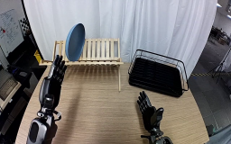
视觉工具实际返回图片 2
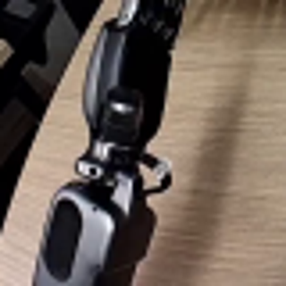
视觉工具实际返回图片 3
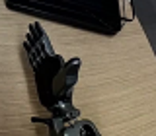
视觉工具实际返回图片 4
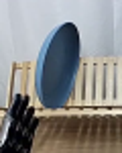
视觉工具实际返回图片 5
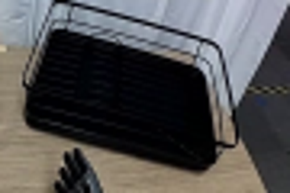
视觉工具实际返回图片 6
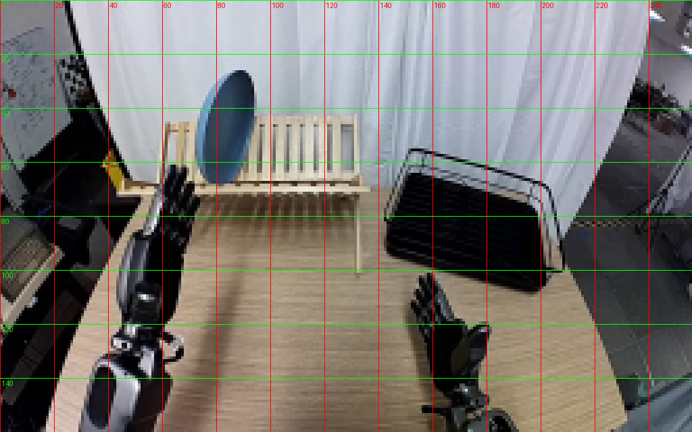
视觉工具实际返回图片 7
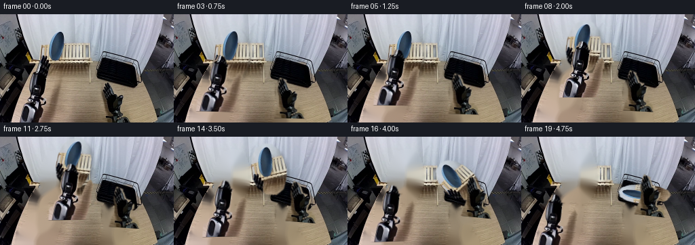
视觉工具实际返回图片 8
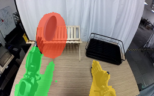
视觉工具实际返回图片 9
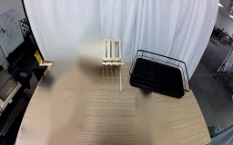
视觉工具实际返回图片 10
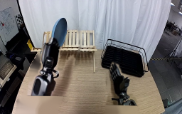
视觉工具实际返回图片 11
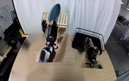
视觉工具实际返回图片 12
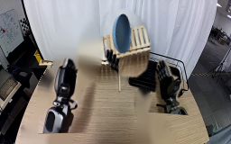
视觉工具实际返回图片 13
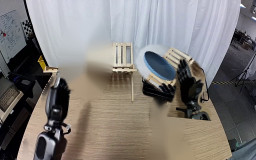
视觉工具实际返回图片 14
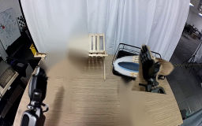
视觉工具实际返回图片 15
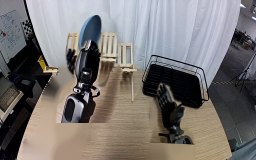
视觉工具实际返回图片 16
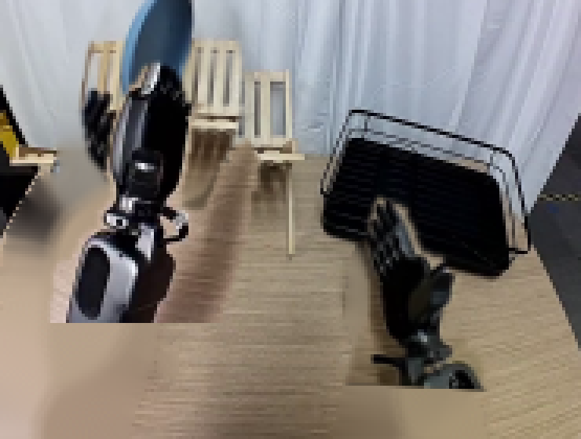
视觉工具实际返回图片 17
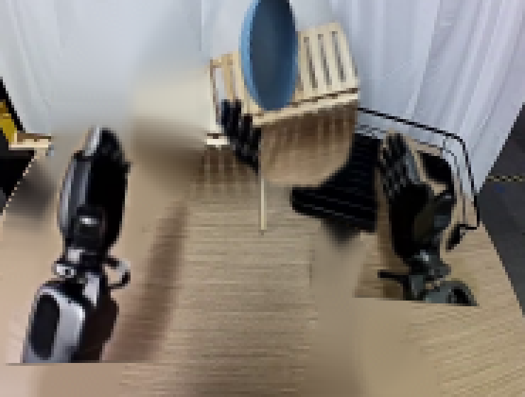
视觉工具实际返回图片 18
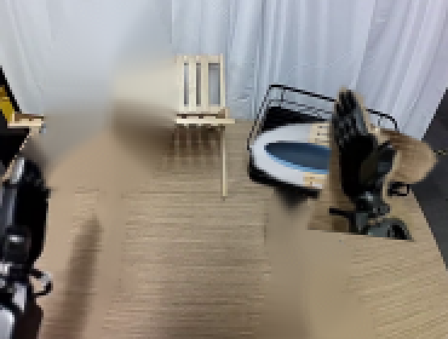
视觉工具实际返回图片 19
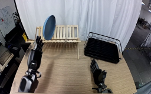
视觉工具实际返回图片 20
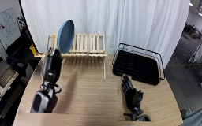
视觉工具实际返回图片 21
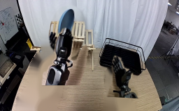
视觉工具实际返回图片 22
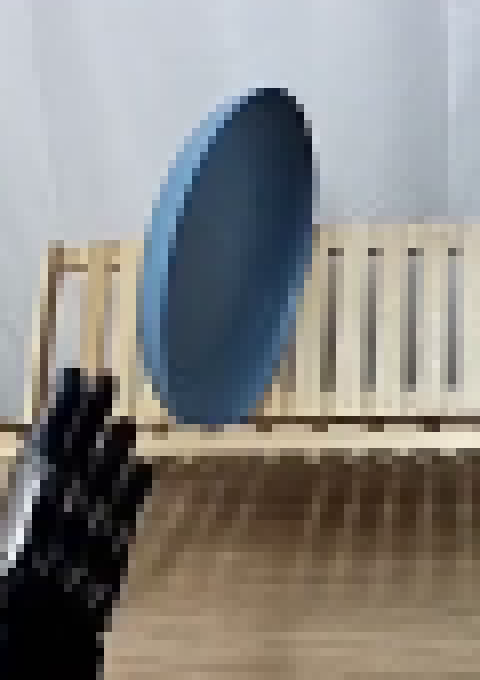
视觉工具实际返回图片 23

视觉工具实际返回图片 24
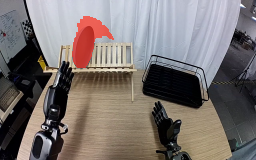
视觉工具实际返回图片 25
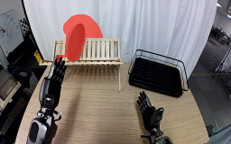
视觉工具实际返回图片 26
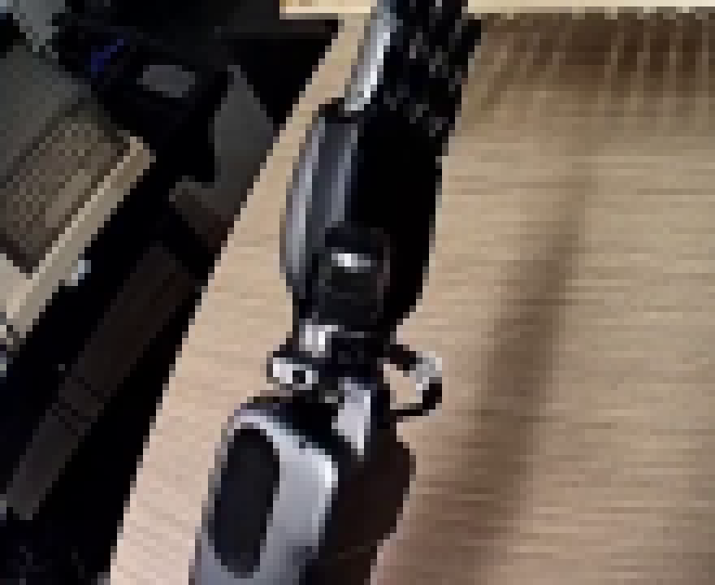
视觉工具实际返回图片 27
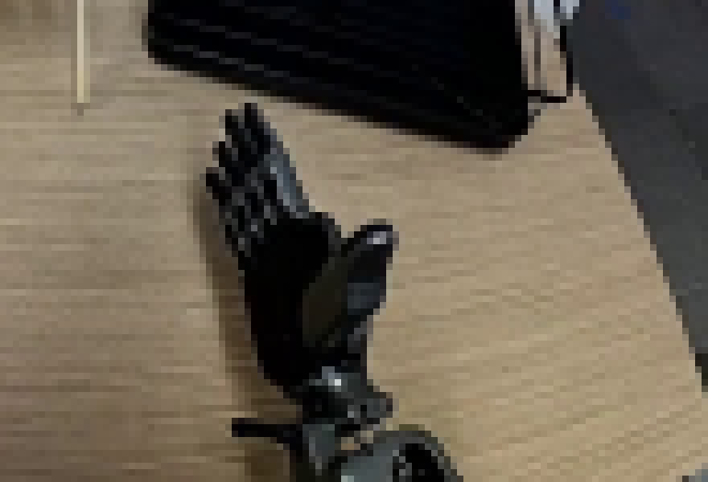
视觉工具实际返回图片 28
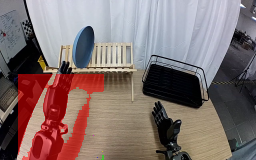
视觉工具实际返回图片 29
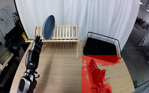
视觉工具实际返回图片 30
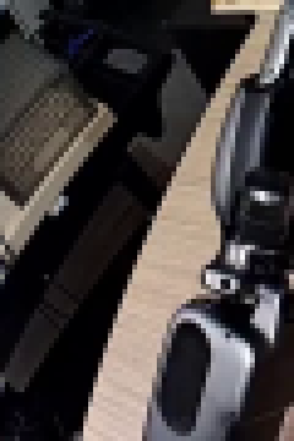
视觉工具实际返回图片 31
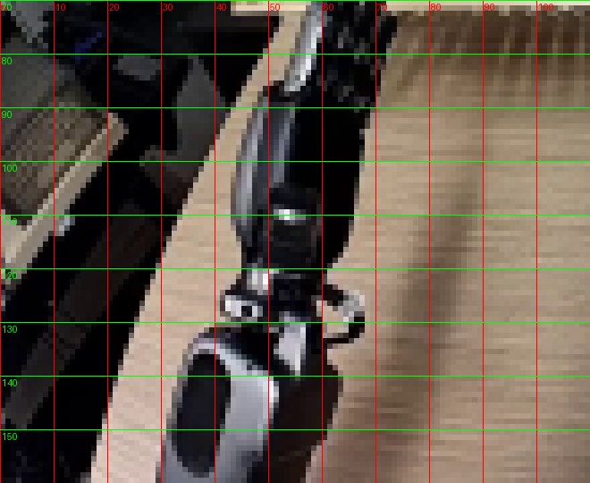
视觉工具实际返回图片 32
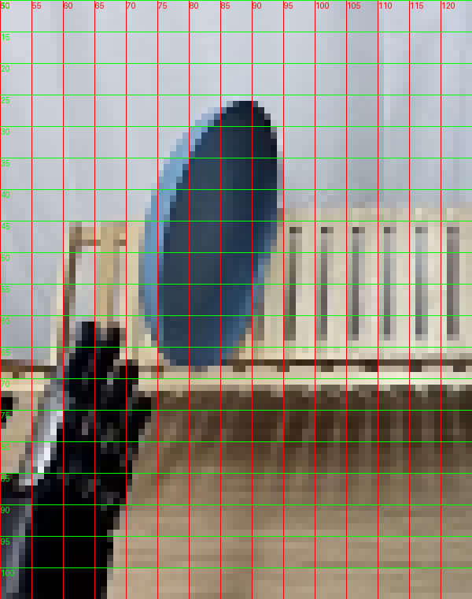
视觉工具实际返回图片 33
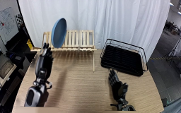
保存候选 1 份；完成命令 43 次；可验证图片返回 33 张。原始 API 响应与完整日志保留在本地。